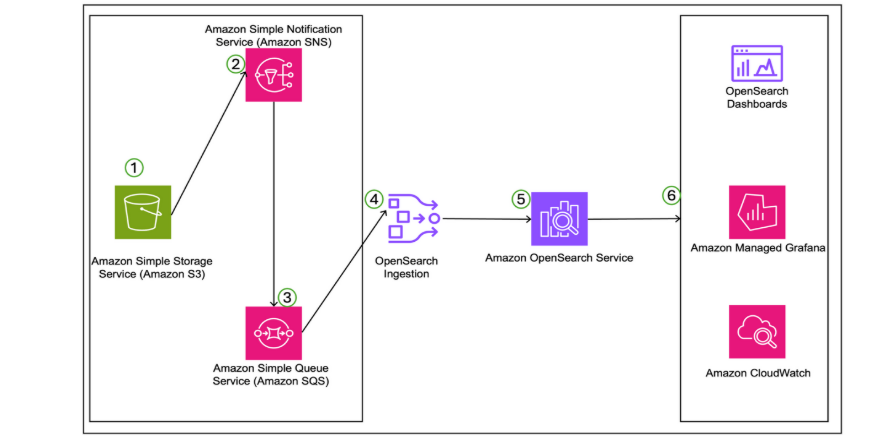

Blog 1
Trellix achieves 35% cost savings and strengthens security with Amazon OpenSearch Service
By Leeneksh Dubey, Harsh Bansal, and Prashant Agrawal, September 19, 2025 | Amazon OpenSearch Service, Customer Solutions, Intermediate (200).
This is a guest post by Leeneksh Dubey, Cloud Engineer at Trellix, in collaboration with AWS.
Trellix, a leading provider of cybersecurity solutions, emerged in 2022 from the merger of McAfee Enterprise and FireEye. Serving more than 40,000 enterprise customers worldwide, Trellix delivers one of the most comprehensive and open AI-powered security platforms for enterprises. Its capabilities help organizations build resilience against advanced threats through automated detection, investigation, and response.
Today, security teams face an increasingly complex threat landscape while the volume of security and application logs continues to grow rapidly. Due to limited resources and staffing, many teams struggle to investigate security data effectively, increasing the risk of new threats going undetected. Trellix addresses these challenges by unifying endpoint, network, cloud, and email security tools into a single AI-assisted platform. Automated threat detection, investigation, and response enables security teams to identify and remediate potential threats faster while reducing operational complexity.
To address exponential log growth across a multi-tenant, multi-Region infrastructure, Trellix used Amazon OpenSearch Service, Amazon OpenSearch Ingestion, and Amazon Simple Storage Service (Amazon S3) to modernize its logging platform. Previously, Trellix faced multiple challenges operating self-managed Elasticsearch clusters on Amazon Elastic Compute Cloud (Amazon EC2). Migrating to managed OpenSearch Service significantly improved operational efficiency. This strategy enables Trellix to process terabytes of security data per day across multiple AWS Regions, while delivering a 35% reduction in storage costs as of Q3 2024. Moving to a managed service also saves up to 10 hours of infrastructure maintenance per week, allowing developers to focus more on higher-value work.
In this post, we share how Trellix leveraged AWS solutions to improve performance, availability, and scalability while reducing operational costs.
Solution overview
Trellix’s innovative log management solution, built on AWS services, addresses the challenge of processing large volumes of security data across multiple Regions. This enterprise-grade architecture demonstrates how organizations can effectively manage security logs at scale while optimizing costs. The solution focuses on three key business challenges: efficient long-term log retention, scalable distribution for analytics and alerting, and cost-optimized storage across a multi-Region footprint. The architecture is illustrated in the diagram below, showing how Trellix manages security logs at scale while optimizing costs.

Figure 1
Trellix’s AWS-based security log management solution implements an end-to-end data workflow that seamlessly handles collection, processing, storage, and analysis. In the following sections, we dive deeper into the six steps of this workflow.
Step 1: Upload data to Amazon S3
The solution begins with data collection, leveraging Amazon S3’s globally distributed infrastructure and high scalability. Raw security and application logs are collected from multiple deployments across different Regions, allowing Trellix to maintain data sovereignty while enabling low-latency access across jurisdictions. These logs are then processed by Trellix’s internal tooling, where they are enriched using proprietary security logic. The enriched dataset is stored back in Amazon S3, forming a secure, scalable foundation for downstream security analytics and processing.
Step 2: Trigger Amazon SNS notifications from S3 events
After the data is enriched and successfully stored in Amazon S3, the system initiates an event-driven automation chain. Amazon S3 is configured to publish event notifications to an Amazon Simple Notification Service (Amazon SNS) topic whenever new data is uploaded. Amazon SNS acts as a notification hub, efficiently fan-out distributing these events to subscribed services or endpoints. This approach keeps the architecture decoupled and flexible, enabling multiple consumers to receive real-time alerts as soon as new data appears.
Step 3: Queue messages in Amazon SQS
Next, SNS notifications are routed to Amazon Simple Queue Service (Amazon SQS), which provides a durable, scalable queuing layer between data producers and consumers. The queue serves as a buffer, reliably and asynchronously delivering event metadata to downstream processing components. Using Amazon SQS adds message retention and fault tolerance—especially valuable during high load or failures—allowing OpenSearch Ingestion to process incoming data in a controlled and resilient manner.
Step 4: Automated data processing with OpenSearch Ingestion
OpenSearch Ingestion continuously polls the SQS queue for new messages indicating that data is ready in Amazon S3. When it receives these messages, it uses built-in integrations to retrieve the data directly from Amazon S3. After retrieval, the ingestion pipeline performs the required transformations before forwarding the data to the OpenSearch Service domain. To optimize cost and performance, Trellix selected OR1 instances for its OpenSearch deployment. These instances provide a high memory-to-vCPU ratio and are specifically optimized for indexing- and search-intensive workloads, making them ideal for large-scale log analytics.
Step 5: Log lifecycle management with Index State Management
To optimize storage usage and manage data lifecycle, Trellix implemented Index State Management (ISM) policies in OpenSearch Service. These policies automate the lifecycle of ingested log data by moving it through defined phases based on age and access patterns. Initially, logs remain in the hot tier for up to 24 hours, enabling immediate access for real-time security analytics. After this period, logs are automatically moved to UltraWarm storage, a more cost-effective option that still supports querying. Finally, once the configured retention period ends, ISM deletes the data from the system. This fully automated lifecycle approach balances performance, compliance, and cost optimization.
Step 6: Comprehensive monitoring and visualization
By using Amazon CloudWatch for end-to-end monitoring—combined with Trellix’s internal automation via OpenSearch public APIs for custom monitoring—this solution delivers full observability through integrated visualization tools. OpenSearch Dashboards enables security teams to analyze logs and perform powerful searches to investigate security events and identify potential threats. In addition, the solution uses Amazon Managed Grafana to create custom dashboards that track both the health of the data pipeline and the performance of the OpenSearch cluster.
This dual-visualization approach provides real-time security event monitoring and analysis, comprehensive infrastructure performance metrics, automated alerts for faster threat response, customizable dashboards for different security operations needs, and a unified view across multi-Region deployments. Together, these tools form a robust observability framework that helps Trellix maintain a strong security posture while supporting optimal performance across its global infrastructure.
Key benefits
Trellix’s adoption of OpenSearch Service as a logging solution delivered three major benefits that significantly transformed its cybersecurity operations.
1. Simplified log management architecture
Trellix streamlined its security operations by deploying a unified log management architecture, eliminating the complexity of maintaining multiple disconnected tools. By using OpenSearch Ingestion—a fully managed, serverless data pipeline—Trellix simplified real-time security data processing. Integration with Managed Grafana adds a unified visualization layer, enabling security teams to focus on threat detection rather than infrastructure management.
2. Scalability and resilience
OpenSearch Service enabled Trellix to achieve unprecedented scalability and resilience. Trellix’s architecture uses OpenSearch Ingestion pipelines to handle log-volume spikes across Regional deployments. OpenSearch Ingestion supports dynamic scaling with automatic resource optimization, making it easier to manage capacity as data grows. This capability helps Trellix maintain consistent performance even during spikes in security events. The solution also implements a robust Multi-AZ deployment strategy to maximize resilience and ensure service continuity. In self-healing tests, the architecture demonstrated recovery in under 9 minutes when a node was restarted—showing strong business continuity even during node failures. Automatic failover reduces disruption to security operations, ensuring continuous monitoring of customers’ security posture. In addition, the solution uses automated Amazon S3 backups combined with hourly snapshots to enable point-in-time recovery. Each Region maintains additional copies of customer data, creating a layered data-protection strategy to ensure integrity and availability of critical security information.
3. Easier scaling with optimized cost
Exponential growth in security data processing required a solution that can scale flexibly while maintaining cost efficiency. The combination of Amazon S3 and OpenSearch Service with UltraWarm storage provided the foundation for this scalable architecture. UltraWarm is a fully managed intermediate storage tier for OpenSearch Service that changes how Trellix manages large volumes of security data across multiple Regions. The solution leverages UltraWarm’s innovative architecture, using Amazon S3 for durable storage while maintaining fast query performance for security analytics. A key benefit of UltraWarm’s Amazon S3-based architecture is eliminating the need for index replicas, which significantly reduces cluster size and related costs while maintaining data durability. An intelligent log classification framework underpins Trellix’s data management strategy by routing incoming data based on security priority. This systematic approach enables efficient routing of P2 and P3 log sources, optimized processing flows for different security priorities, reduced load on the primary SIEM infrastructure, and customized handling based on customer requirements. This deployment is particularly valuable for security log analytics, where historical data analysis is essential for threat detection and compliance. As a result, Trellix achieved significant operational and financial outcomes: priority-based routing and tiered storage reduced storage and compute costs by 35%, maintained high performance in security operations, supported efficient retention and analysis of large volumes of historical data, and reinforced Trellix’s commitment to comprehensive security monitoring while optimizing operational spend. This demonstrates how AWS services can help organizations reduce costs without compromising security or operational effectiveness.
Next steps
With this solution successfully deployed, Trellix is positioned to explore additional AWS capabilities and emerging technologies to further enhance its cybersecurity operations:
- Integrate AWS ML/AI services to analyze petabytes of security log data
- Implement ML-based anomaly detection in OpenSearch Service
- Use security analytics plugins for advanced threat detection
- Deploy custom configurations and prebuilt security rules
Conclusion
Trellix successfully modernized its log management infrastructure in collaboration with AWS, deploying a sophisticated architecture to address the challenge of processing terabytes of security data per day across multiple Regions. By using OpenSearch Service with UltraWarm nodes and integrating Amazon S3, the solution delivered meaningful performance improvements, including faster log ingestion and more streamlined operations management. The architecture’s innovative tiered storage approach, combined with optimized retention policies, reduced storage costs by 35% while still meeting compliance requirements.
This transformation positions Trellix to handle growing data volumes and evolving security challenges efficiently, while demonstrating how strategic use of cloud services can simultaneously improve performance, reduce cost, and increase operational efficiency.
About the authors
| Leeneksh Dubey (Leeneksh) is a Cloud Engineer at Trellix, specializing in designing scalable and highly fault-tolerant cloud infrastructure systems on AWS. He has deep experience in data, analytics, and artificial intelligence (AI), including end-to-end solution design, deployment automation, and cost optimization. His goal is to build secure, high-performance environments that support the company’s cybersecurity product portfolio. |
|---|
| Harsh Bansal (Harsh) is an Analytics and AI Solutions Architect at Amazon Web Services (AWS). He works closely with customers to help them migrate to the cloud and optimize clusters to improve performance and reduce cost. Prior to AWS, Harsh helped customers use OpenSearch and Elasticsearch for a wide range of search and log analytics needs. |
|---|
| Prashant Agrawal (Prashant) is a Sr. Search Specialist Solutions Architect for Amazon OpenSearch Service. He partners with customers to migrate workloads to the cloud and optimize existing clusters for better performance and cost efficiency. Before joining AWS, Prashant helped many customers deploy OpenSearch and Elasticsearch for search and log analytics use cases. Outside of work, he enjoys traveling and exploring new places—in short, he loves the “Eat → Travel → Repeat” lifestyle. |
|---|